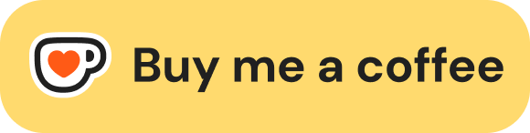

Focus
Pick a preset or customize exactly what disappears from YouTube.
What to hide
Visual tweaks
Time
Set a daily limit and YouTube will close itself when you hit it.
Channels
Allow only specific channels, or block ones that suck your time.
Mindful
Add friction so you watch YouTube intentionally, not by reflex.
Stats
See your real YouTube relationship — measured, not guessed.
Advanced
Keyboard shortcuts, sync, and data tools.
| Ctrl+Shift+Z | Toggle Deep Work mode |
| Ctrl+Shift+Y | Open settings |
| Alt+Shift+Z | Quick toggle Deep mode (on a YouTube tab) |
| / | From custom homepage, jump to search |
chrome://extensions/shortcutsSupport ZenTube
ZenTube is free and always will be. If it helped you take back your time, consider a tip — it pays for hosting and keeps the project going.
Buy me a coffee
One-time tip via Ko-fi. No fees on one-time donations. Takes 20 seconds.

Become a recurring sponsor
Support development on GitHub Sponsors. Cancel anytime. 100% goes to the project.
Sponsor on GitHubEven just sharing ZenTube with a friend helps a lot. Thank you for using it. 🙏
About ZenTube
YouTube, but on your terms.
Free, open-source, no account required. No tracking. Your data stays on your device.